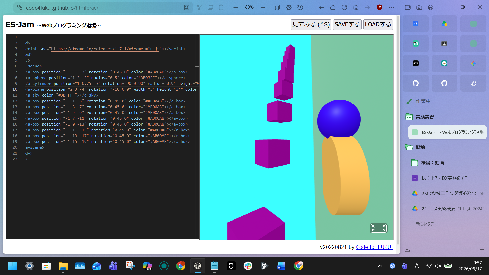
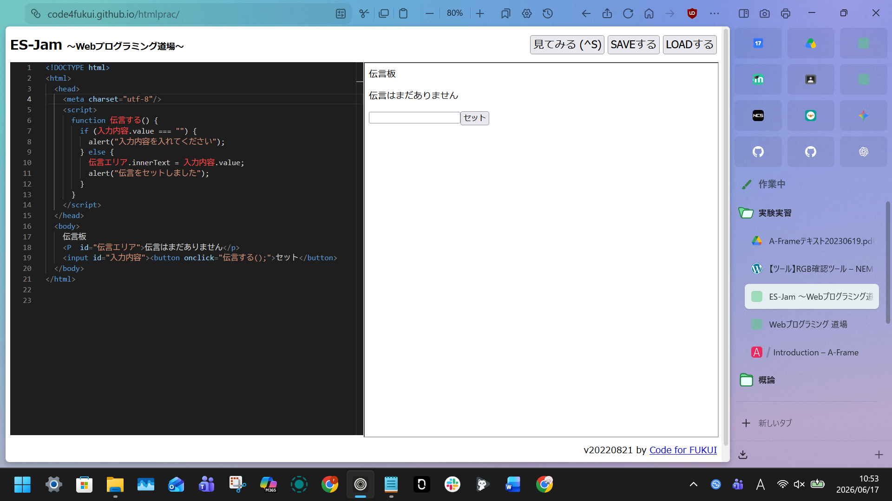

３週目のレポート ： 公大高専１年実習I-1
3a班09番 ric8a
第3週目
3-1 JavaScript体験：VR空間を作る

自作した３次元空間
1.内容
JavaScriptを用いて、VRの空間を製作してオブジェクトの色や方向などを自由に作り出して体験する。
2.感想
私は、これに取り組んでいてプログラムにも文系科目の英語や国語のように単語や文法があると感じた。また、座標の指定に気を付けておかないと重なってしまうことがあり、難しいとも感じた。
3-2 JavaScript体験：伝言プログラムを作る

伝言板
1.内容
JavaScriptを用いて、簡易的な伝言板を作る。htmlを用いてコードを定義してheadとbodyでボタンを動作させたり、入力できるボックスを作る。
2.感想
こちらもやはり文法や単語のように使うことが分かってしらべてみると、やはりルールが存在しており、守っていないとうまく動作しないということが分かった。また、こういったプログラミングに興味があるので自主的に何かを作りたいと感じた。
各ページへのリンク
1週目のレポート
2週目のレポート
3週目のレポート
私のホームページ